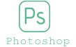
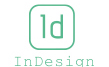

TITELLESTIU
Diseño de una imagen de marca que identifique una campaña promocional para un festival de artes escénicas, en este caso de títeres. Este festival quiere difundir y promover las obras de pequeño formato, que son poco conocidas. Trabajo individual, realizado para un proyecto de clase.
Programas utilizados para el proyecto
- 
- 

Tratamiento Tipográfico
Tratamiento del color